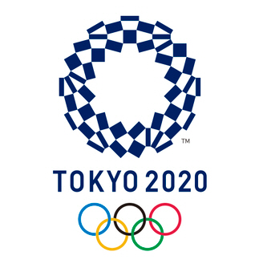

TOKYO 2020 올림픽

조화의 체크 엠블럼
체크 무늬는 역사적으로, 세계적으로 인기있는 디자인입니다. 일본에서도 체크 무늬가 에도 시대 (1603-1867)에 "이치마츠 모요" 라고 알려져 있었고, 일본 전통의 남색으로 재탄생한 체크 무늬는 일본을 대표하는 우아함과 세련됨을 새롭게 표현하고 있습니다.
올림픽은 4년마다 개최되는 대회로 전 세계 사람들의 사랑을 받는 스포츠 이벤트입니다.
올림픽은 여름과 겨울에 열리며, 스포츠를 통한 세계의 평화와 우호 증진을 목표로 합니다.
제 29회 2008 베이징 올림픽은 전 세계 204개국에서 참가했습니다.
30회 대회는 2012년 런던에서 개최되었습니다.
자세히 보기..